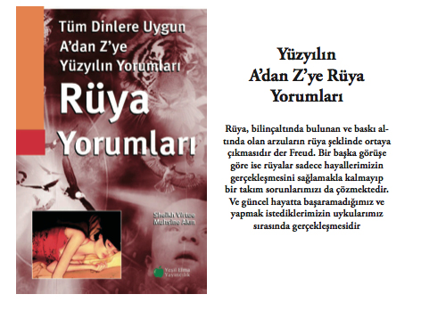
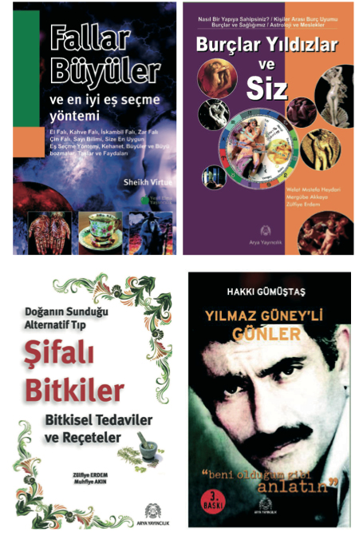
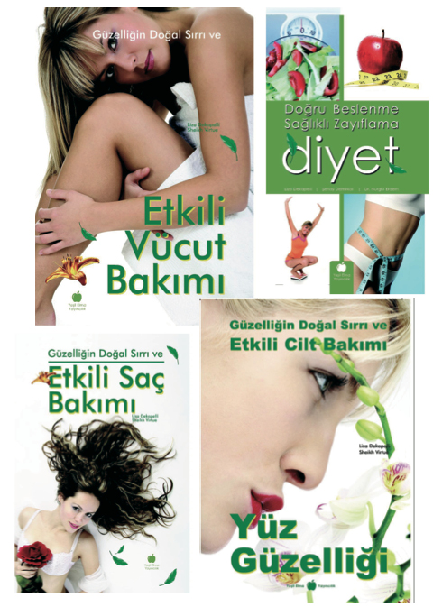
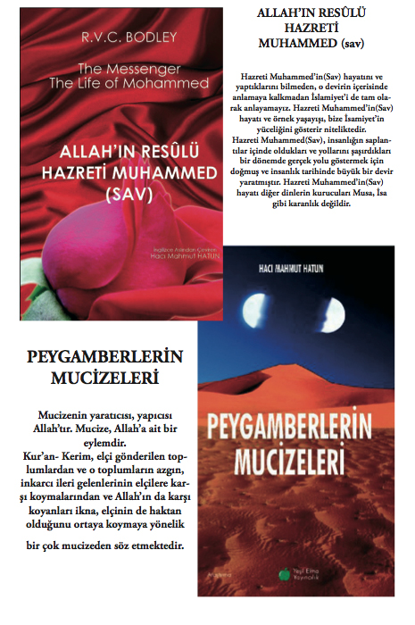
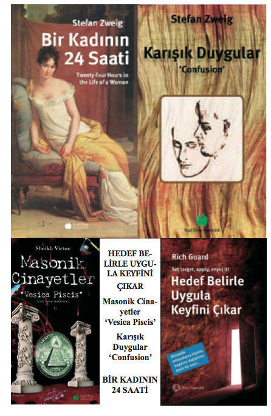

Türkiye’de İlkler
İlk Milli Marş
1921 yılında, Milli Eğitim Bakanlığı’nca milli marş için bir yarışma düzenlendi ve 500 lira ödül kondu. Yarışmaya 724 şiir katılmıştı. Mehmet Akif Ersoy, yarışma ödüllü olduğu için, girmemişti. Zamanın Milli Eğitim Bakanı Hamdullah Suphi Tanrıöver, ünlü ozana 5 Şubat 1921 günü ödül konusunda kaygılı olmamasını önerince o da, ‘Kahraman Ordumuza’ diye sunduğu ‘İstiklal Marşı’ başlıklı şiirini, yarışma kuruluna gönderdi. TBMM’nin 12 Mart 1921 günkü toplantısında istiklal Marşı, ulusal marş olarak kabul edildi.
Marşı besteleme yarışmasına ise 24 besteci katıldı. Kurtuluş Savaşı nedeniyle besteleme işi yarıda kaldı. Seçiciler Kurulu, 1924 yılında Ali Bıfat Çağatay’ın bestesini benimseyerek okullara duyurdu. Bu marş, 1930 yılına kadar çalındı. Yine aynı yıl, bu bestenin yerine Cumhurbaşkanlığı Orkestrası Şefi Zeki Üngör’ün bestesinin çalınması istendi. Bu tarihten sonra da Üngör’ün bestelediği İstiklal Marşı, ‘milli marş’ olarak benimsendi.

Türkiye’de Latin Harfleri İle Basılan İlk Kitap
Ülkemizde Dil Devrimi’nden, yani 1928 yılından sonra yarısı eski, yarısı Latin harfleriyle basılmış kitapları ilk kez Maarif Ki-taphanesi (Yayınevi) çıkardı. Bugün de Cağaloğlu’nda yayınını sürdüren bu yayınevi, aynı zamanda en eski yayınevidir. Bu yayınevini 1895 yılında ilk Türk kitapçılarından Hacı Kasım Efendi kurmuştur. Yayınevi ayrıca, çıkardığı ‘Saatli Maarif Takvimi’yle ünlüdür.

Türkçe Klavyenin İlk Kullanılışı
Daktilolarda kullanılan ‘Standart Türk Klavyesi’nin uygulanışı, ilk kez 20 Ekim 1955 günü alınan bir kararla gerçekleştirildi.
Bu tarihe kadar, daktiloların klavyeleri, çeşit çeşitti. Türk alfabe kurallarına göre düzenlenen yeni bir daktilo yazma yöntemi 1943 yılında başlayan çalışmalar ve araştırmalardan sonra saptandı.

İlk Köy Enstitüleri
1940 yılında, İsmail Hakkı Tonguç’un yönetiminde eğitime başladılar. Köy çocuklarının bölgelerinde kalarak yetişmelerini sağlamak amacıyla kurulan enstitülerde okutulan derslerin yarısı kültür, dörtte biri tarım, dörtte biri de teknik derslerden oluşuyordu. Enstitülerin, kendilerine özgü çalışma yöntemleri vardı. Her öğrenci, köyünün ekonomik ve toplumsal yaşamını ayrıntılarıyla saptamak zorundaydı. ‘İş içinde iş yaparak öğrenmek’ amacını güden enstitülerin kurulduğu yerler, köylerin yakınında, uygulamanın yapılabileceği en verimli kesimlerdeydi. 1943’te de, bu enstitülere öğretmen yetiştirmek için Hasanoğlan Yüksek Köy Enstitüsü kuruldu. Buraya girebilmek için, köy enstitüsünü bitirmiş olmak gerekiyordu.

Konut Kredisi Veren İlk Türk Bankası
Emlak Kredi Bankası’dır. Yurdumuzda yerleşim sorununa yardımcı olmak ve konut sahibi olacakları desteklemek amacıyla kurulan ilk banka olan ‘Türkiye Emlak ve Eytam Bankasıdır. 1927 yılında faaliyete geçti. Bankanın adı, daha sonra ‘Emlak Kredi Bankası’ olarak değiştirildi.
İlk Yaz Saati Uygulaması
1 Temmuz 1940 günü yürürlüğe giren Bakanlar Kurulu kararıyla başladı. Bir çeşit elektrik kısıtlaması olan yaz saati uygulamasında Türkiye de ilk kez saatler bir saat geri alınmıştı.
Uçağa Binen İlk Kadın
Uçağa binen ilk kadın Belkıs Şevket’tir. ‘Müdafaa-i Hukuk Nirva’ denilen Kadın Hakları Koruma Derneği üyesi olan Belkıs Şevket, 1913’te Fethi Bey’in yönettiği uçağa binerek, İstanbul üzerinde dolaşmıştır.

Uluslararası Olimpiyat Komitesindeki İlk Türkiyeli
Türkiye’yi uluslararası Olimpiyat Komitesi’nde temsil eden ilk Türk, Selim Sırrı Tarcan’dır. Tarcan, 1908-1930 yılları arasında, sıkı olimpiyat kurallarını yerine getirerek Türkiye’yi temsil etme hakkını elde etti.

İlk Türk Kadın Veteriner
1933 yılında Erenköy Kız Lisesi’ni bitirdikten sonra, ‘doktor’ olmayı düşünürken, fikir değiştirerek Yüksek Ziraat Enstitüsü’ne kaydını yaptıran Sabire Aydemir, okuldan mezun olduktan sonra ‘ilk Türk kadın veterineri’ unvanını aldı.
2 yıl çeşitli laboratuarlarda çalıştıktan sonra, tekrar okuluna ‘asistan’ olarak dönen Aydemir, 1945 yılına kadar bu görevini sürdürdü. Daha sonra Pendik, İnebolu, Ünye, Fatsa ve Samsun’da 1920’ye kadar mücadele veterinerliği yapmıştır.

İlk Türk Viskisi
1963 yılında satışa çıkarıldı. Genellikle arpadan yapılan viskinin yurdumuzda üretimine, 1955’ten sonra geçildi. İlk viskimiz de, 1963’te ‘Ankara’ markası ile satılmaya başlandı.
Türkiye’de İlk Voleybol Oyunu
1919-1920 yıllarında oynanmaya başladı. Bir Amerikan örgütü olan YMCA’nın basketbolün yanı sıra voleybole de önem vermesi ve bir özel salon açtırmasıyla bu spor türü yurdumuza girdi. Salonun müdürü olan Amerikalı Dr. Driver’in bu konudaki çabaları, voleybolun sevilmesine yol açtı. Dr. Driver’e yardımcı olan kişi ise Selim Sırrı Tarcan’dır. Bu oyun ilk kez, Erkek Öğretmen Okulu’nda oynandı.
Türkiye’de ilk kez Suphiye Rıfat adında bir kız, Fenerbahçe Erkek Takımı’nda voleybol oynadı ve 1928 yılında bu takım, İstanbul şampiyonu oldu. Bu olay, Türk voleybol geçmişinin ilginç unutulmaz bir anısıdır. Suphiye, Fenerbahçe Kız Voleybol Takımı’nın da kaptanlığını yapmıştır.

Türkiye’de İlk Yelken Yarışları
1912-14 yıllarında, İstanbul’da oturan İngiliz yelkencilerince düzenlendi. Ülkenin ilk yelken kulüpleri olan Moda, Büyükada ve Bakırköy
kulüplerinin kurucuları da, yine İngilizler olmuştu. Türkiye’de ilk resmi ve kurallara uygun yelken yarışı, 12 Ağustos 1932 günü düzenlendi. Yurt dışında kupa kazanan ilk Türk yelkencisi unvanı ise Demir Turgut’a aittir. Yelkende ilk karşılaşmamız da, 1936 yılı Berlin Olimpiyatları’yla başladı. İlk yelken Milli Takımı, Bezhat Baydar, Dr. Demir Turgut ve Harun Ünsal’dan oluşmuştu.
Türkiye’de İlk Laiklik Uygulaması
3 Mart 1927 yılında halifeliğin kaldırılması ile başlar. Bu yolla,din ile dünya işlerinin devlet örgütü içinde bir elde toplanması engellenmiş oldu. 1937 yılında yapılan bir değişiklikle laiklik, kesin olarak Anayasa maddelerinden oldu. Türkiye’de laiklik, vicdan özgürlüğüne de yer veren ve akılcılığı sağlayan bir temel kural olarak yerleşmiştir.
İlk Devalüasyon
Türkiye’ de ilk devalüasyon olayı, 7 Eylül 1946 yılında %115.4 oranında, 4 Ağustos 1958 yılında %221.4 oranında, 10 Ağustos 1970 yılında %66.6 oranında, 21 Eylül 1977 yılında %10 oranında, 1 Mart 1978 yılında %29.9 oranında,
10 Haziran 1979 yılında %77.7 oranında, 24 Ocak 1980 yılında %48.6 oranında, 5 Nisan 1994 yılında %104 oranında,
23 Şubat 2001 yılında %40.6 oranında, devalüasyon gerçekleştirilmiştir.

İlk Gülle Atma Oyunu
1903 yılında Osmanlı döneminde kurulan Beşiktaş Jimnastik Kulübü’nde yapıldı. Bu oyunun öncüleri, Ahmet Fetgeri ile Gülleri Sami’dir

Türkiye’de İlk Engelli Koşu
1928’de gerçekleştirildi. 110 metre üzerinden yapılan engelli koşunun ilk Türkiye rekortmeni, Galatasaray Kulübü’nden Sekip Engineri’dir. Derecesi, 20.1 metre idi.
Türkiye de 400 metre engelli koşunun başlangıcı ise, 1932 yılına rastlar. Bu dalda ilk rekortmenimiz de, Fenerbahçe Kulübü’nden Ziya Atlet’tir.
İlk Daktilografi Dünya Şampiyonu
Ece Özbayrak, 1965 yılında Paris’te düzenlenen ve 21 ülkenin 159 yarışmacısı arasından şampiyon olarak, bu konudaki ‘ilk’ ün-vanını aldı.

Türkiye’de İlk Televizyon Yayını
Türkiye de ilk televizyon yayınlarını, İstanbul Teknik Üniversitesi başlattı. Yayınlarla ilgili çalışmalara 1950 yılında geçildi. Projenin uygulama alanına girmesi, verici cihazlarının gelmesi 1952’de tamamlandı. Aynı yıl da yayına geçildi. Yayınlar, cihazların yetersiz oluşu ya da tesisat yokluğu nedenleriyle daha çok stüdyo çalışmalarıydı. Ancak, bir kez kamera, Taşkışla’daki Teknik Üniversite binasının damına çıkarıldı ve Mithatpaşa Stadyumu’nda oynanan bir futbol maçı, oradan görülebildiği kadarıyla seyircilere iletildi. Teknik Üniversite’nin yayınlarını izleyenlerin sayısını kesin olarak söylemek mümkün değildi. Çünkü TV sahiplerinden hiçbirinin PTT’ye kaydı yoktu.
Bununla birlikte, İstanbul’da o yıllarda 2 bin televizyon alıcısının bulunduğu tahmin ediliyor. Her cihazın en azından 5 kişi tarafından seyredildiği düşünülürse, Teknik Üniversite’nin televizyon yayınlarını 10 bin kişinin izlediği söylenebilir. TV yayınlarının yayın çevresi de kesin olarak bilinmiyordu Ancak, yayınların İstanbul yakasında Yeşilköy’e, Anadolu yakasında da Suadiye’ye kadar uzandığı sanılıyor. Üniversite’nin televizyon vericisinin gücü de oldukça düşüktü; 50 watt. Oysa, ciddi bir yayın için en azından 500 wattlık bir verici gerekmektedir.
TV yayınlarının büyük bölümünü canlı yayınlar oluşturuyordu. Bu yayınlara katılanların hemen hepsi, ‘gönüllü’ sanatçılardı. Batı Müziği bölümünü 25-30 kişilik bir senfoni orkestrası üzerine almıştı. Yayınlarda ‘tiyatro’ ve ‘sinema’nın da ayrı bir yeri vardı. Ali Esin’in, harita üzerinde verdiği haftalık hava raporları hayli ilgi topluyordu.
TRT Televizyonu, 1964’te resmen kuruldu. İlk kuruluş yeri, Ankara’daki Mithatpaşa Caddesi’nde bulunan stüdyo idi. 31 Ocak 1967 akşamı ilk resmi televizyon yayını, Ankara’da yapıldı. 1968’de Almanya’dan sağlanan 5 Kw’lik verici ile kapalı yapılan yayınlar, devreden çıkarıldı. 31 Ocak 1968’de ise TV deneme yayınları haftada 3 gün olarak başladı. Bu deneme yayınları 5 yıl sürdü.
Yayınlar, 31 Ocak 1971’de 4 güne, 21 Haziran 1972’de de 5 güne çıkarıldı. 1971 Ekim’inde İstanbul-İzmir-Ankara radyolink sistemi, TV nakline müsait hale geldi.
TRT, Ankara programlarını 1 Aralık 1971’de Çamlıca’da ki PTT radyolink terminali vasıtasıyla İstanbul’a aktardı. Bu yayınlar, 26 Ağustos 1972’ye kadar İstanbul seyircisine yine İstanbul Teknik Üniversitesi Televizyonu aracılığıyla seyrettirildi. 30 Ağustos 1972’den itibaren ise Çamlıca’da ki istasyon, 2.5 Kw güçlü yayına
geçti.
TV’nin kendi ürettiği program yayınları yüzde 72, dış kaynaklı yayınlar ise yüzde 28’ini teşkil ediyordu.
Mahmut Tali Öngören, TRT’nin ilk Program Dairesi Başkanı ve Ankara Televizyonu’nun ilk müdürü oldu.

İlk Türk Kadın Tiyatro Oyuncusu
Afife (Jale) adlı bir genç kızdır. 10 Kasım 1918’de, 500 kuruş aylıkla Darülbedayi’ye ‘deneme’ oyuncu olarak girdi. Tahsin Nahifin ‘Rakibe’ adlı oyunuyla ilk sınavını verdi. Afife Hanım, aynı zamanda Türk tiyatro tarihinin ‘Jan Dark’ı sayılır. Çünkü o zamanlarda Müslüman kadınların sahneye çıkmasının yasak oluşu yüzünden Afife Hanım, polislerle epeyce mücadele etti. 8 Mart 1921’de belediyeye gelen bir yazı ile Darülbedayi’den çıkartıldı. Tepebaşı ve Kadıköy’de oyunculuğunu yine de sürdürdü. Darül-bedayi sanatçılarının da katıldığı İsmail Faik Bey’in ‘Yeni Sahne’adlı tiyatro topluluğunda yılmadan oynayan Afife Hanım, Türk kızlarının bu sanat dalına ilgi duymasına yardımcı olmaya devam etti. Afife Hanım, 24 Temmuz 1941 günü Bakırköy Akıl Hastanesi’nde öldü. Bu yürekli kadın oyuncumuzu daha sonra Seniye Şaziye Moral, Neyyire Neyir, Bedia Muvahhit, Huriye Hikmet gibi kadın oyuncuları izlediler.

İlk Türk Tenisçisi
1926 yılında Türkiye’de ilk kez tenis yarışması düzenlendi. Türkiye Tenis Şampiyonluğu’nu, o yılın İstanbul birincisi olan Suat Subay kazandı. Çift erkeklerde Türkiye Tenis Birinciliği’ni de Suat Subay, Sedat Eroğlu ikilisi aldı.

İlk Türk Kadın Spiker
Türkiye’de ilk deneme TV yayını başladığı sırada, Ankara Üniversitesi Dil-Tarih ve Coğrafya Fakültesi İngiliz Filolojisi’nde okuyan Nuran Emren (Devres), spikerlik için açılan sınava katıldı. Sonuçlar açıklandığında, büyük bir hayal kırıklığına uğradı. Kazananlar arasında adı yoktu. Ancak, 3 gün sonra sınav iptal edildi ve yeni sınavı başaran, biri erkek, öteki bayan iki kişiden biri oldu. Nuran Devres, böylece ‘İlk kadın TV spikeri’ olma ün-vanını aldı. Ancak, 3 yıl sonra evlendi ve mesleğini bıraktı.
Türkiye’nin İlk Şeker Fabrikası
Türkiye’de ilk şeker fabrikası, Uşak’ta açıldı. İlk şeker pancarı üretimine de 1926 yılında başlandı.
Türkiye’de İlk Şehirlerarası Hava Ulaşımı
İlk kez şehirlerarası hava ulaşımına 1933’te başlandı. O yıl, Ankara-İstanbul arasında başlanan uçak yolculuğunda, 460 yolcu ile 1.112 kilo ağırlığında mektup taşınmıştır.
Türkiye’de İlk Spor Dergisi
1919-1921 yıllarında yayımlanan ‘Spor Alemi’dir. Türkiye’nin ilk maç spikeri Sait Çelebi tarafından çıkarılıyordu.
İlk Soyadı Kullanma Zorunluluğu
1935’te yürürlüğe giren ‘Soyadı Kanunu’ ile kesinleşti. 1926 yılında yürürlüğe giren Medeni Kanun’la, soyadı kullanılmaya başlanmıştı ama bu zorunlu değildi. Son çıkarılan yasada, ‘Herkes, öz adından başka soyadını da taşımaya mecburdur’ denilerek, soyadı taşıma zorunluluğu konmuştur.
İlk Sivil Türk Pilotlar
Münif Paşa’nın oğlu Hüseyin Münif ve veteriner Sadi Suat, Türk tarihine geçen ilk sivil pilotlardır. İkisi de, 1910 yılında Paris’te havacılık eğitimi görerek, ‘pilotluk belgesi’ aldılar. Bu arada bir de uçak satın alan Hüseyin Münif, Türkiye’de ‘özel uçağı olan ilk kişi’ oldu.
Seslendirilen İlk Türk Filmi
Senaryosunu Nazif Tepedelenlioğlu’nun yazdığı ‘Bir Millet Uyanıyor’ adlı filmdir. 1932 yılında çevrilen film, Türkiye’de seslen-dirildiği ve Muhsin Ertuğrul’un en önemli yapıtlarından birisi olduğu için ilginçtir. Filmin belli başlı oyuncuları Ferdi Tayfur, Atıf Kaptan, Naşit Özcan, Emel Rıza ve Kevser’di. Mustafa Kemal Atatürk’ün Söylev’inden derlenmiş olaylardan esinlenerek yazılmış senaryonun, sağlam bir yapısı olmadığı için bu film, beklenen başarıyı elde edemedi.
İlk Türk Kadın Sinema Oyuncusu
‘Ateşten Gömlek’te oynayan Bedia Muvahhit ile Neyyire Neyir (Ertuğrul)’dir. Sahnede olduğu gibi beyazperde de o zamanlar, Müslüman kadınların çalışması yasaktı. 1918’de bazı Türk kızları, öğrenci olarak ‘Darül-bedayi’ye alınmışlarsa da, bunlar sahneye çıkamamışlardı. İçlerinde Afife Hanım, 1920’de Kadıköy’deki Apollon (Hale) Tiyatrosu’nda ‘Jale’ takma adıyla sahneye çıkınca, işe polis karışmıştı. 1921’de Darülbedayi’de Müslüman kadınların çalıştırılmaması, resmi yoldan bildirildi, ancak aynı yıl Afife ile Şaziye Moral hanımlar, bir başka temsilde oynadılar. İki sanatçı da, bu yüzden mahkemelik oldular.
Muhsin Ertuğrul, ‘Ateşten Gömlek’i çevirirken, filmin ulusal konusundan cesaret alarak, başlıca kadın kahramanlar olan Ayşe ile Kezban’ı, Türk oyuncularının canlandırmasına çalıştı. Ayşe için Darülbedayi oyuncularından Muvahhit’in eşi Bedia Muvahhit seçildi. İkinci rol için gerekli kimse bulunamayınca, gazetelere ilan verildi. Vasfi Rıza Zobu, bir anısındaki ikinci rol için, ‘nasıl kız oyuncu’ bulunduğunu şöyle anlatır:
‘İkinci rol için genç bir Türk kızı bulunamamıştı. Gazetelere ilan ettiler. Ertesi gün tek bir Türk kızı başvurdu. Kemal Film’in bürosu, Sirkeci’de, Ali Efendi Sineması’nın üstündeki iki küçük odanın içinde idi. O gün, büroya uğradığımda, Neyyire’yi gördüm. Kolejde öğrenciymiş. ‘Film için müracaat etti. Muhsin’i bekliyor’ dediler.’
İlk Sesli Film Stüdyosu
1932 yılında İpek Film Şirketi kurdu. İstanbul’da Nişantaşı’ndaki bir büyük fırın, yeni baştan düzenlenerek ‘stüdyo’ durumuna getirildi. Bu sesli film stüdyosunun ilk eseri, Muhsin Ertuğrul’un yönetmenliğini yaptığı, ‘Bir Millet Uyanıyor’ adlı filmdi. Sesli film stüdyosunun yönetmeni ise, Morhen adlı bir Alman ses mühendisiydi.

İlk Resimli Posta Pulu
Edirne’nin düşman işgalinden kurtarılışının anısına çıkarıldı. 1913 yılına gelinceye kadar Türk pullarında resim kullanılmadı. Bu ilk resimli posta pulumuz, Londra’da bastırılmıştı. Edirne’deki Selimiye Camii’nin resmiyle süslüdür.

Türkiye’de İlk Renkli Film
1953 yılında Muhsin Ertuğrul’un yönettiği ‘Halıcı Kız’dır. Fotoğraf yönetmenliğini Ahmet Cezmi Ar yapmıştı. İçinde renkli bir parça bulunan ilk Türk filmi de, 1949’da çevrilen ‘Çıldıran Kadın’dır. Filmdeki renkli parçada, İstanbul’daki Kızkulesi’nin çok az süren bir görüntüsü yer almıştı.

Türkiye’de İlk Renkli Belgesel Film
1953 yılında Ali İpar’la, İlhan G. Arakon’un hazırladıkları ‘Bir Şehrin Doğuşu’ adlı filmdir. İstanbul’u anlatan film, Berlin Uluslararası Film Şenlikleri’ne katıldı, ancak derece alamadı. Gerçek anlamda ilk belgesel Türk filmi ise, Mazhar Şevket İpşiroğlu ile Sabahattin Eyüboğlu’nun birlikte düzenledikleri ‘Hitit Güneşi’dir. Bu film, 1956 yılında Berlin Film Şenlikleri’nde ikinci gelerek ‘Gümüş Ayı’ armağanını aldı. Siyah-beyaz olarak çekilen film, Anadolu’da arkeolojik kazılarda ortaya çıkan eserleri konu almıştı.

Türkiye’de İlk Referandum
9 Temmuz 1961 günü, Anayasa’nın oylanması nedeniyle yapıldı. Halkoyuna sunulan Anayasa için, 10 milyon 320 bin 751 seçmen oy kullandı. Genel seçim kuralları uygulanan oylamada, geçerli sayılan oylardan yüzde 61.7’si, 1961 Anayasası’na ‘Evet’ dedi.

Türkiye’de İlk Rafineri
Raman’da 1945 yılında kuruldu. Raman’da petrol bulunmasından sonra Maymune Boğazı’nda deneme niteliğinde işletmeye açılan ilk rafinerimiz, gemi kazanlarından yararlanılarak yapılmıştı. Bu rafineri, yılda ancak 10 ton petrol arıtabiliyordu. Güneydoğu Anadolu’nun çeşitli yerlerinde de petrol bulununca, rafinerinin işe yarar parçaları, 1948’de Batman’a götürülerek yılda 200 bin ton petrol arıtabilecek yeni bir rafineri kuruldu.

Türkiye’de İlk Radyo Oyunu
1938’de Ankara Radyosu’nda oynandı. Radyo Temsil Kolu tarafından ve haftada bir kez cuma günleri oynanan oyunlar, genellikle çeviri ve uyarlamalardan seçiliyordu. Temsil Kolu Şefi, Ekrem Reşit Rey idi. Bu kolun ilk üyeleri de Kemal Tözem, Vahi Öz, İbrahim Delideniz, Kadriye Tuna, Reşat Altay, Muhip Araman, Saime Arcıman gibi oyunculardan oluşuyordu.

Radyoda İlk Reklam
Türkiye’de radyoda ilk reklam, 1951 yılında yapıldı. Reklamlar, önceleri radyonun kendi spikerleri tarafından sözlü olarak okunuyordu. Daha sonra ise, reklamlar için ‘özel saatler’ ayrıldı. Ankara ve İstanbul’da PTT’nin posta görevlerinde yararlanmak amacıyla kurduğu 5’er kilovat gücündeki verici istasyonlarından, 1927’ yılında yapıldı. Deneme niteliğindeki bu yayınları, 1936’ya kadar Türk Telsiz Telefon Kuruluşu yönetti. İlk radyo istasyonu da, Ankara’da kuruldu. 28 Ekim 1938 günü sürekli yayınlara başlayan bu yeni radyo, uzun dalga ‘Türkiye Radyosu’ ve kısa dalga ‘Ankara Radyosu’ adıyla görev yapıyordu. İstanbul Radyosu’nun sürekli yayına başlayışı ise 1 Eylül 1949 günü gerçekleşti.

Türkiye’de İlk Pazar Tatili
Türkiye’de ilk pazar tatili uygulamasına, 29 Mayıs 1935 yılında yürürlüğe giren yasa ile başlandı. Bu yasa çıkmadan önce, hafta sonu dinlenme tatili cuma idi.

İlk Porselen Fabrikası
Yurdumuzda modern anlamda kurulan ilk porselen fabrikası, Sümerbank’ın Yıldız Porselen Fabrikası’dır. Bunu daha sonra, 1963’te kurulan İstanbul Porselen Sanayii ile 1968’de açılan Yarımca Porselen, Seramik ve Çini Fabrikaları izlemiştir.

İlk Pastörize Süt Üretimi
Yurdumuzda ilk pastörize süt üretimine, 1957 yılında Ankara Atatürk Orman Çiftliği’nde başlandı. İlk yıllar, 2 milyon 500 bin litreyi bulan süt üretimi, ilk kez 1971 yılında 9 milyon litreyi aştı.Bu artışa bir neden de, 1967’de Adana ve İzmir’de açılan pastörize süt fabrikalarıydı.

İlk Kadın Postacı
1982 yılında PTT, posta dağıtıcısı almak için açtığı sınava, bayanları da çağırmıştı. İzmir’deki bu sınava giren genç kızlar arasından yedisi, sınavı kazanarak, ilk kadın postacılarımız oldular. Bunların adları şöyle: ‘Melekper Kılıç, Belgin Ege, Aynur Akgül, Berrin Toygarlar, Serpil Güzel, Neşe Erakman, Kemale Hepko-rucu.’

İlk Türk Arabası-Otomobili
1960 İhtilali’nden sonra, Cumhurbaşkanı olan Cemal Gürsel, Türkiye’de otomobil üretilmesini istedi. 1960 yılında Eskişehir Devlet Demiryolları CER Atölyeleri’nde ilk Türk otomobili ‘Devrim’ üretildi. 30 Ekim 1961 tarihinde Cemal Gürsel’e gösterilmek üzere Ankara’ya getirilen ‘Devrim’, 1961 model Consuller’a benziyordu. TBMM önündeki törende, 100 metre giden, sonra duran otomobile yeterince benzin koyulmadığı ortaya çıktı ve seri üretiminden vazgeçildi.

Türkiye’de İlk Opera Yapıtı
Ahmet Adnan Saygun’un, ‘Özsoy’ adlı opera denemesidir. İlk kez 1928 yılında İran Şahı Pehlevi’nin Türkiye’ye gelişi onuruna temsil edildi. Atatürk ve Şah’ın huzurunda oynanan bu ilk operamızda, başoyuncu da dramatik soprano Semiha Berksoy’du. Opera tekniğinin gerçek anlamda uygulandığı ilk opera da, yine Ahmet Adnan Saygun’un bestelediği ‘Kerem’dir. Metin yazarlığını Selahattin Batu’nun, yaptığı bu opera, ilk kez Ankara’da 22 Mart 1953 günü sahnelendi.
Olimpiyatlara Katılan İlk Kadın Sporcular
Türkiye’de olimpiyatlara katılan ilk kadın sporcular, Halet Çam-bel ve S. Fetgeri Aseni’dir. 1936 Berlin Olimpiyatları’nda yurdumuzu ilk kez onlar temsil etmişlerdir.

İlk Operet Temsilleri
Operet türü hafif sahne eserlerinin Türkiye’de ilk bestecisi, Dikran Çuhacıyan Efendi’dir. Birçok operet besteleyen Dikran Efendi’nin, ‘Leblebici Horhor’u, oynandığı dönemde hem yurt içinde, hem de yurt dışında büyük ilgi görmüştü.

Türkiye’de Miladi Takvimin İlk Kullanımı
Türkiye’de Miladi takvimin uygulanmasına ilk kez 1926’da başlandı. O tarihe kadar kullanılan ‘Hicri’ ve ‘Rumi’ takvimler de böylece kaldırılmış oldu.

İlk Türk Milli Basketbol Takımı
Basketbolün resmen kuruluşu, 1 Mart 1959’da gerçekleşmiştir. 1936’da kurulan bir federasyonla, voleybol ve eltopu ile birlikte yürütülen basketbol, bu tarihte ayrı bir dal olarak Türk sporuna eklendi.
İlk Milli Basketbol Takımımız, ilk karşılaşmasını Yunanistan’la, 24 Haziran 1936 günü, Beyoğlu Halkevi Spor Salonu’nda yaptı. Bu maçı 49-12 kazanan takımımızın kaptanı, Naili Moran idi. Öteki oyuncular ise Sadri Usuoğlu, Nihat Ertuğ, Jak Habib, Hazdayi Penso, Feridun Koray, Dionisos Sakalak ve Hayri Ersebük’tü.
Türkiye’de İlk Medeni Nikah
17 Şubat 1926 günü yürürlüğe giren ‘Türk Kanunu Medenisi’ ile başladı. Türkler, Müslüman olmadan önce, evlenme biçimleri çok çeşitli idi. İslamiyete geçişle birlikte, evlenmede yeni kurallar ortaya çıktı. Çok kadınla evlenme, belirli din kurallarıyla saptandı.
İlk Kadın Muhtar
Ülkemizin ilk kadın muhtarı, Gül Esin’dir. Cumhuriyet’in ilanının 10. yıldönümünde Aydın iline bağlı Çine ilçesinin Karpuzlu bucağından ‘muhtar’ seçilen Gül Esin, o günleri şöyle anlatıyor: ‘Muhtarlık için aday olduğumda, bana kimse karşı çıkmadı. Muhtarlığa, o zamanki nahiye müdürümüzün isteği ile girmiştim. İlk kadın muhtar seçildiğimde de herkes bana yardımcı oldu. Muhtarlığım sırasında da köydeki kız kaçırma olaylarının önlenmesinde büyük çaba harcadım. Köye yol, köprü ve köy konağı yaptırdım.’
İlk Maç ve Spor Spikeri
Sait Çelebi’dir. Kendine özgü renkli anlatım ustalığıyla tanınan Sait Çelebi, 1897-1953 yılları arasında yaşadı.
İlk Köylü Milletvekili
Atatürk, Ankara’nın Kozan köyüne 1934 yılında yaptığı bir gezide, Satı Çırpan adlı zeki bir kadın ile tanıştı. Satı Kadın diye anılan Satı Çırpan’ın, 1935-39 döneminde Ankara milletvekili olmasını sağladı. Türk tarihinde ilk köylü kadın milletvekili olan Satı Çırpan, Atatürk’ün dileğiyle, adını ‘Hatı’ olarak değiştirdi. Doğduğu Kazan köyünde muhtarlık da yapan Hatı Çırpan, 1956 yılında öldü.
Türkiye’de İlk Koalisyon Kabinesi
20 Şubat 1961’de, İsmet İnönü başkanlığında kuruldu. Mecliste hükümet kuracak çoğunluk sağlanamadığından, değişik partilerin ortaklaşa kurup desteklediği bu tür hükümet kurma biçimi, tarihimizde ilk kez uygulanıyordu. İlk koalisyon, Cumhuriyet Halk Partisi ile Adalet Partisi üyelerinden oluştu.
İlk Kibrit Fabrikası
İstanbul’da, Büyükdere-Bahçeköy yolu üzerinde açıldı. Türkiye’de bu fabrika açılıncaya kadar, kibrit dış ülkelerden alınırdı. 1929 yılında çıkarılan bir yasa ile kibrit yapım, alım ve satımı, Tekel Genel Müdürlüğü’ne verildi. 1956’dan sonra kibrit yapımı serbest bırakılınca, Tekel’in yanı sıra, özel fabrikalar da kuruldu.
Türkiye’de İlk Kır Koşusu
1920 yılında Robert Kolej’inde düzenlendi. Bu koşu ve ondan sonra yapılanlar, kır koşusundan çok, bir sokak koşusuydu. Ancak, kır koşularının başlangıcı diye nitelenirler. Kurallara uygun ilk kır koşusu, 1923’te gerçekleştirildi. İstanbul’da, Maslak ile Mecidiyeköy arasında yapılan bu ilk kır koşusunu, Ömer Besim Koşalay kazandı. Türkiye Kır Koşusu Birincilikleri ise ilk kez 1937’de yapıldı. Bu koşuda Şevki Eren birinci geldi.
İlk Keman
Türkiye de ilk keman yapımına, 1944 yılında Alman ustalarından Christian Kertel tarafından kurulan Ankara Devlet Konservatuarı Keman ve Viyolonsel Atölyesi’nde başlandı. Keman yapımında, Almanya’dan özel olarak getirtilen ladin çamı ve akağaç kullanılmaktaydı.

Türkiye’de İlk Karikatür
Teodor Kasap’ın ‘Diyojen’ adlı mizah dergisinde yayınlandı. Kimin tarafından yapıldıkları bilinmeyen imzasız üç örnek, Türk karikatür sanatının ilk ürünleridir. Ülkemizde karikatürde ilk imza ise, Cem’e aittir. Cem, ‘Kalem’ dergisinde, karikatür sanatının güçlü örneklerini çizmişti. İlk karikatür ustası da odur.
Türkiye’de İlk Kalp Nakli
Ülkemizde ilk kez bir insandan diğerine kalp naklini, 22 Kasım 1968 tarihinde Ankara Yüksek İhtisas Hastanesi’nde Dr. Kemal Beyazıt gerçekleştirdi. 14 yaşındaki fırın işçisi Erdal Yıldırım’ın kalbi, 3 çocuklu anne 41 yaşındaki Maviş Karagöz’e takıldı. Ancak hasta, yeni kalbiyle birkaç saat yaşayabildi. 25 Kasım 1968 günü, bu kez İstanbul Haydarpaşa Göğüs Cerrahisi’nde, Dr. Siyamı Ersek, Türkiye’de ikinci kalp nakli ameliyatını yaptı. Ersek, trafik kazasında ölen 50 yaşındaki bekçinin kalbini, 26 yaşındaki Ali Akgül’e taktı. Bu hasta da 39 saat yaşayıp, öldü.

İlk Kadın Milletvekili
Nakiye Elgün’dür. 1919’da, İstanbul’un işgalini protesto etmek amacıyla Sultanahmet Alanı’nda yapılan toplantıda, Halide Edip’in yanı sıra, yaptığı ateşli konuşmalarla dikkati çeken Elgün, İstanbul Kız Öğretmen Okulu’nu bitirdi. Aynı okulda müdür yardımcılığı yaptı. Vakıf okullarının bir düzene konulmasını sağlamaya çalıştı. Cumhuriyet’ten sonra eğitim çalışmalarına devam eden Nakiye Elgün, çeşitli kurumlarda üyelik ve başkanlık yaptı. Üç dönem Erzurum Milletvekili seçildi. Nakiye Elgün’den başka, 1935 yılında TBMM’ye 17 kadın milletvekili girmişti. Tarihimize ilk kadın milletvekilleri olarak geçen bu parlamenterlerimizin adları ve temsil ettikleri ilçeler şunlardı: ‘Mebrure Gönenç, (Afyon), Hatı Çırpan (Ankara), Şükran Örsbaştuğ (Antalya), Sabiha Gökçül (Balıkesir), Şekibe İnsel (Bursa), Hatice Özgener (Çankırı), Huriye Öniz (Diyarbakır), Fatma Memik (Edirne), Fakihe Öymen (İstanbul), Benal N. Anman (İzmir), Ferrun Güpgiip (Kayseri), Bahire Morova (Konya), Mihri Pektaş (Malatya), Meliha Ulaş (Samsun), Esma Nayman (Seyhan), Sabiha Görkey (Sivas), Semiha Hızal (Trabzon).

Kadınlara İlk Kez Seçme ve Seçilme Hakkı
Türkiye’de kadınlara ilk kez seçme ve seçilme hakkı, 5 Aralık 1934 tarihli ‘Teşkilat-ı Esasiye Kanunu’nun 10. ve 11. Maddelerinin Değiştirilmesi Hakkındaki Kanun’ ile verildi.

İlk Kabare Tiyatrosu
Türk tarihinde kabare tiyatrolara benzer ilk tiyatrolar, 19. yüzyıl sonlarında açıldı. ‘Kafe Şantan’ denilen bu tiyatrolar, daha çok Beyoğlu’ndaydı. Mandas, Kristal Palas, Bizans’ın Büyük Alkazar, Trokadero, en ünlüleriydi. İlk sanatsal nitelikteki kabare tiyatrolarının başlangıcı, 1920-1923 yıllarına rastlar. Bu türün ülkemizde olgunlaşıp gelişmesi ise, İkinci Dünya Savaşı’ndan sonradır.
Gerçek bir kabare tiyatrosunu, 1962’de Haldun Taner kurmuştur. ‘Devekuşu Kabare Tiyatrosu’ adlı bu tiyatro, çeşitli gelişmelerden sonra günümüzde de etkinliğini sürdürmektedir. Bilindiği gibi kabare tiyatrosu, seyircilerin içki de içebildiği, genellikle günlük olayları yergili dille anlatan bir tiyatro türüdür.

İlk Kadastro Çalışmaları
1912’de yürürlüğe giren bir yasa ile başladı. Kadastro işleri, Tapu ve Kadastro Genel Müdürlüğü’nce yapılır. Arazi ve mülklerin yerini, sınırlarını ve değerlerini belirli bir yöntemle düzenlemek olan ‘kadastro’ çalışmalarının, ülkemizde geç başlamasının nedeni, Osmanlı Devleti’nin çok dağınık bir yerleşme yolu seçmesindendir. İlk kadastro yasasının uygulanmasını, savaşlar engelledi. 1925’te çıkarılan bir yasayla, kadastro örgütünün kurulması öngörüldü. 1934’te çıkarılan ilgili yasa, günümüzde kadastro işlemleri konusunda tek dayanak oldu. Tarihimizdeki ilk kadastro çalışması ise, Defter-i Hakani Nazırı Mahmut Esat Efendi zamanında, 5 Şubat, 1912 günü yürürlüğe giren ‘Emval-i Gayrimenkulenin Tahdit ve Tahriri Hakkındaki Kanun-ı Muvakkata’dır. Türkiye’deki ilk Kadastro Yüksek Meslek Okulu da, 1911 yılında ‘Tapu ve Kadastro Mekteb-i Alisi’ adıyla ve bu konuda eleman yetiştirmek amacıyla İstanbul’da açıldı.

İlk Kabartmalı Pul
1968 yılında basıldı. Basılan bu pul, yalnız Türkiye’de değil, dünyada da kabartma olarak basılan ilk puldur. PTT tarafından Ankara’daki Ajans Türk Kurumu’na bastırılan pulda, Türk çinileri desen olarak kullanılmıştır.
Türkiye’de İlk Judo Sporu
Judonun ülkemize gelişi, oldukça yenidir. Bu sporu sevdirenler, Halil Yüceses, İbrahim Öztek ve Hakkı Koşar’dır. Türkiye’de ilk uluslararası judo karşılaşmaları, 1971 yılında İzmir Akdeniz Oyunları’nda yapıldı. Bu ilk uluslararası judo ilişkilerinde Türk sporcular, katıldıkları bütün kilolarda dereceye girdiler. 70 kiloda Süheyl Yeşilnur ‘gümüş’, 93 kiloda Kamil Korucu ‘gümüş’, 63 kiloda Ali Demir ‘bronz’, 80 kiloda Namık Ekin ‘bronz’, ağırda Mehmet Ali Berber ‘bronz’ madalya kazanmışlardı.

İlk İstiklal Madalyası
TBMM’nin 1920’de çıkardığı bir yasa ve Bakanlar Kurulu kararıyla 1923 yılında verildi. İlk İstiklal Madalyaları, TBMM üyeleri ve savaşta yararlılık gösterenler için yapıldı. O günlerdeki değeri, 3 liraydı. Kurtuluş Savaşı’nın içinde olanların şeridi kırmızı, savaş gerisindekilerin beyaz, milletvekillerinden savaşta görev alanların yarısı kırmızı, yarısı yeşil, görev almayanlarda ise yalnız yeşildi.

İlk Milletvekili Olan İşçi
Türkiye’de ilk kez milletvekili olan işçi, Numan Usta’dır. Tophane Askeri Sanayi Okulu’nu bitiren Numan Usta, Tophane ve Zeytinburnu fabrikalarında çalışarak usta oldu. ‘İttihat ve Terakki Cemiyeti’, onu son Osmanlı Meclisi’ne İstanbul Milletvekili seçtirdi. 1919-1921 yıllarını İngilizlerin sürgünü olarak Malta’da geçirdi. Döndükten sonra TBMM’nin ilk döneminde Türkiye’de ilk işçi milletvekili olarak yer aldı.

Türkiye’de İlk İktisat Fakültesi
Türkiye’de ilk iktisat fakültesi, 14 Aralık 1936’da kuruldu. 4 Mart 1937’de deneme öğrenimine başlayan okul, 1939-40 öğretim yılı sonunda 29 mezun verdi. Bugünkü İstanbul Üniversitesi İktisat Fakültesi’nin çekirdeği olan bu okulun simgesi ise, ‘karınca’ idi. Bu simgenin seçilmesine neden, karıncanın çalışkanlığı, ölçülü çalışmayı belirtmesidir.

Türkiye’de İlk İktisat Kongresi
17 Şubat 1923’te İzmir’de toplandı. Bu ilk İktisat Kongresi, siyasal bağımsızlığına kavuşan Türkiye’nin ekonomik bağımsızlığını da gerçekleştirmek amacıyla düzenlenmişti. 4 Mart 1923 gününe kadar çalışmalarını sürdüren kongreye, esnaf, zanaatkar, işçi, tüccar, çiftçi, sanayici, banka ve yüksek okulların temsilcileri katılmıştı. 16 günlük çalışmalar sonunda bir ‘ekonomik ant’ düzenlenerek kamuoyuna sunulmuştu.

Türkiye’de İlk Islahevi
Suçlu çocukları eğitip topluma yararlı kişiler olmalarını sağlamak amacıyla ülkemizde ilk ıslahevi, 1937’de Edirne’de açıldı. 1938’de Kızılcahamam’a, 1940’ta da Ankara’ya taşınan ıslahevi, bu yönde atılan ilk adım oldu.

İlk Kez Türk Doktoru Tarafından Bulunan Hastalık
Türk doktoru Hulusi Behçet (İst. 1889-1948), 25 yıllık çalışması sonucu, dünyada ilk kez bir deri hastalığı olan ve 1947 Cenevre Tıp Kongresi’nde kendi adını alan ‘Behçet Hastalığı’nı buldu.Hastalık, o tarihten itibaren tüm dünyada bu adla anılmaya başlandı.
Türkiye’de İlk Hemşirelik
Ülkemizde ilk hemşirelik, Kızılay’ın 1911 yılında açtığı kurslarla başladı. Bu kurslarda yetişenler, Balkan ve Birinci Dünya savaşlarında görev aldılar. Çağdaş anlamda ilk hemşirelerimiz ise, yine Kızılay’ın İstanbul’daki Hemşirelik Okulu’nu bitirenlerdir.
İlk Hava Şehitleri
Tayyareci Fethi Bey’le, yardımcısı Sadık Bey, tarihimize ilk hava kurbanları olarak geçmişlerdir. Denizcilik Okulu’nu bitiren Fethi Bey, havacılık konusunda çalışmalar yapmak için 1911’de İngiltere’deki Bristol Uçak Fabrikası’na gitti. Daha sonra Türkiye’ye dönen Fethi Bey, kendi kullandığı özel uçağı ile İstanbul’dan Kahire’ye gitmek istedi. Yanında da Sadık Bey bulunuyordu. Kahire’ye ulaşmalarına pek az kala, Taberiye ilçesinin Şiliriye bucağı dolaylarında, bilinmeyen bir nedenle düşerek parçalandılar.

İlk Kadın Havacı
Atatürk’ün manevi kızı Sabiha Gökçen’dir. Atatürk, Bursa’ya yaptığı bir gezi sırasında, henüz 12 yaşında olan Sabiha adlı küçük bir kızla tanıştı. Onu manevi evlat edinerek Ankara’ya götürdü. Gökçen, Çankaya İlkokulu ve İstanbul Üsküdar Kız Koleji’nde öğrenimini tamamladıktan sonra, 1935’te Türkkuşu Sivil Havacılık Okulu’na girdi. Sovyet Rusya’ya giderek, yüksek planörcülük eğitimi gördü. 1936 yılında Eskişehir’deki Hava Okulu’nda yaptığı ‘özel öğrenim’den sonra, askeri pilot oldu. Ege ve Trakya’da yapılan manevralara katıldı. Dersim Ayaklanmasının bastırılmasında önemli rol oynadı. Balkan ülkelerinin konuğu olarak 1938’de uçağıyla bir ‘Balkan turu’ yaptı. Türk kuşu’nda başöğretmen oldu. Türkiye’nin ‘ilk askeri kadın pilotu’ Sabiha Gökçen’dir.

İlk Türk Havayolu Şirketi
20 Mayıs 1933 Yasası ile Milli Savunma Bakanlığına bağlı olarak ‘Havayolları Devlet İşletme İdaresi’ adıyla kuruldu. Ankara-Eskişehir arasında uçak seferleri düzenlendi. Kuruluş, 1938 yılında çıkarılan bir yasa ile Ulaştırma Bakanlığı’na bağlandı ve adı da ‘Devlet Hava Yolları’ olarak değiştirildi. Günümüzde bu kuruluş, Türk Hava Yolları Anonim Ortaklığı (THY) adıyla yurt içi ve dışı seferler düzenlemektedir.

Türkiye’de İlk Hakemlik
Türkiye’de ilk hakemlik, atletizm dalında başladı. Spor hakemliğinin kurucusu da, ‘ilk Atletizm Federasyonu Başkanı’ olan Burhan Felek’tir.
Burhan Felek’in, yaşamı boyunca uğraş verdiği alanlardan biri de, gazeteciliktir. Şeyhülmuharririn unvanına sahip olan Felek, Donanma Dergisi’nde başladığı mesleği, uzun yıllar çeşitli gazetelerde yazarak sürdürdü. Türk Basın Birliği’nin de kurucusu olan Burhan Felek, 4 Kasım 1982’de hayata veda etti.

Türkiye’de İlk Harf Devrimi Uygulaması
1 Kasım 1928’de TBMM, Yeni Türk Harfleri Yasası’nı onayladı. Bu yasa ile Türkiye’de ilk Harf Devrimi uygulaması başlatıldı. Atatürk, Harf Devrimi’ni İstanbul Sarayburnu’nda 9 Ağustos 1928 günü yaptığı bir konuşma ile kamuoyuna duyurdu. Bu konuşma, o günlerde halkın büyük ilgisiyle karşılanmıştı. Çıkarılan bu yasadan sonra da, Latin harfleriyle ilk Türk alfabesi yayınlandı.

Türkiye’de İlk Haftalık Mizah Dergisi
3 Eylül 1908’de yayınlanmaya başlanan ‘Kalem’dir. Türkçe ve Fransızca basılan dergi, 1911’de kapandı. Sorumlu Müdürü ve Başyazarı, Salah Cimcoz’du. Cem’in karikatürleri, İzzet Melih’in fıkraları bu dergide yayınlandı. O yılların en önemli mizah dergi-siydi. Tamamı, Ankara Milli Kütüphane’dedir.

Türk Tarihinde İlk Özgür Haberleşme
Haberleşme özgürlüğü, Osmanlı devletinde bir düzene sokulmuş değildi. 1876 ve 1908 anayasaları, birtakım hak ve özgürlükler getirmekle birlikte, haber özgürlüğünün adı geçmiyordu. Bu kavram ilk kez, 1924 Anayasasında belirtilerek bir düzene kondu.

Türkiye’de İlk Güzellik Yarışması
Türkiye’de ilk güzellik yarışması, 1929 yılında Cumhuriyet gazetesi tarafından düzenlendi ve Feriha Tevfik (Dağ), ilk güzellik kraliçemiz oldu. Cumhuriyet’in ilanından 6 yıl sonra, Türk kadınının henüz çarşafı yeni attığı bir sırada yapılan bu yarışma, büyük anlam taşıyordu. 2 Eylül 1929 günü Cumhuriyet gazetesi binasında yapılan seçimde Feriha Tevfik, ‘Türkiye Güzeli’ olurken, Semine Hanım ikinci, Matmazel Araksi de üçüncü güzel ilan edildi.
Bu yarışmada yaşanan ilginç olaylar şöyleydi: ‘Kraliçe seçilen Feriha Tevfik, henüz 13 yaşındaydı ama iri yapılı olduğu için, yaşından büyük gösteriyordu. Jüri, ilk önce Türkiye Güzeli olarak iki numaralı yarışmacı Hicran Hanım’ı seçti, ancak onun evli olduğu anlaşılınca, yarışma dışı bırakıldı.’ 1933 yılında yapılan Dünya Güzellik Yarışması’nda ise, ilk ‘dünya güzelimiz’i çıkardık. Türkiye Güzeli olarak Belçika’nın Spa kentinde yapılan Uluslararası Güzellik Yarışması’na katılan Keriman Halis, Dünya Güzeli seçildi, İtalya’nın Napoli kentinde 1952 yılında gerçekleştirilen Avrupa Güzellik Yarışması’nda da ilk kez bir Türk kızı, Günseli Başar, o yılın Avrupa Güzeli oldu.

Türkiye’de İlk Güvenoyu
14 Şubat 1909 tarihinde, Kamil Paşa Kabinesi’nin düşürülmesi sırasında kullanıldı. Kamil Paşa’nın yerine sadrazamlığa Hüseyin Hilmi Paşa getirildi. Türk siyasal tarihinde ilk kez uygulanan güven oylamasının sonuçları, çok önemli olayların doğmasına yol açtı. Kamil Paşa’nın düşürülmesi, Meclis’te çok az üyesi bulunan muhalif Ahrar Fırkası’yla İttihat ve Terakki Fırkası’na karşı olanlar için büyük yenilgi olmuştu.

Türkiye’de İlk Güreş Federasyonu
1923 yılında kuruldu. İlk başkanı da Ahmet Fetgeri Aşeni oldu. Minder güreşinde güreşçilerimiz ilk kez 1924 yılında Paris Olimpiyat Oyunları’na katıldılar. Ancak, yurt dışında ilk başarılı dereceyi, 1928 yılında Amsterdam Oyunları’nda 79 kiloda Tayyar Yalaz’ın dördüncülüğüyle aldık.

Türkiye’de İlk Gravür Sanatçısı
Kazıma ve oyma sanatı olan gravür, ülkemizde ilk kez grafik sanatçısı Aliye Berger tarafından yapıldı. 1906 yılında İstanbul’da doğan Berger, sanatını İngiltere’de geliştirdi ve yurda dönüşünde ürünlerini sergiledi. Daha sonra yabancı ülkelerde de çeşitli sergiler açan sanatçı, tarihçi, diplomat ve hattat olan Şakir Paşa’nın kızıdır.

Türkiye’de İlk Golf Kulübü
Türkiye’de ilk golf kulübü, 1914 yılında İstanbul’da kuruldu. İstanbul Golf Kulübü adıyla kurulan bu kulüp, günümüzde Tenis Federasyonu’na bağlıdır. Yurdumuzda ilk golf alanı da yine bu kulüp tarafından 1914-1918 yılları arasında Mecidiyeköy’de yapılmıştı. Bugün bu golf alanı, Büyükdere sırtlarındadır.

Türkiye’de İlk Gizli Direniş Örgütü
1919 yılında kurulan ‘Karakol Cemiyeti’, Türkiye de ilk gizli direnme örgütü olarak kabul edilir. Örgütün Başkanı Kara Vasıf Bey, üyeler ise Kemalettin Sami Paşa, Adnan Adıvar, Hüsamettin Ertürk, Ahmet Şükrü Bey, İhsan Bey idi. Başkan Vasıf Bey, Sivas Kongresi’ne katıldı.
Topluluğun tutumunu, Mustafa Kemal hoş karşılamadı. Bir süre sonra kapatılan örgütün bütün üyeleri, yeni kurulan Müdafaa-i Milliye Örgütü’ne geçtiler.

Türkiye’de İlk Fuar
Türkler, çok eski çağlardan beri alışverişlerini belirli günlerde açılan panayır denilen pazarlardan yaparlardı. Günümüzdeki anlamıyla panayırlar, fuar olmaktan çok uzaktılar. Panayırların ulusal sayılabilecek nitelikteki ilki 1927 yılında İzmir’de kuruldu. İzmir Valisi Kazım, Dirik’in çabasıyla kurulan bu panayır, 1933’te Kültür park’ın yanına alındı. Daha sonra burası düzenlendi ve 1947 yılında da ‘İzmir Enternasyonal Fuarı’ adını alarak uluslararası fuar niteliğini kazandı. Her yıl 20 Ağustos-20 Eylül günleri arasında açılan bu fuar, ilk fuarımız olmuştur.

İlk Uluslararası Türk Hakem
16 Ekim 1924’te Moskova’da, 15 Mayıs 1925’te Ankara’da yapılan Türkiye - Rusya futbol karşılaşmalarını yöneten Altınordulu Hamdi Emin Çap’tır. Hakemlik konusunda İngiltere’de eğitim görmüş olan Hamdi Emin Çap, yurdumuzda da futbol dalında hakemliği gerçek biçimde kurmuştur. 1928’de Futbol Federasyonu Başkanı olan Çap, 1932 yılında da Türkiye’de ilk özel hakem yetiştirme kursunu açtı. 1936 Berlin Olimpiyatları dönüşünde İngiltere’den Buts adlı bir hakemlik uzmanını getirip, Türkiye’de ilk resmi hakem kursunu açtıran da yine odur. Yurdumuzda FIFA kurallarına uygun olarak uluslararası futbol karşılaşmalarını yöneten ve FIFA kokartı takan ilk Türk futbol hakemi de Sulhi Garan’dır.

Türkiye’de İlk Futbol Takımı
Türkiye’de ilk futbol takımı Galatasaray’dır. 1905 yılında Galatasaray Lisesi beşinci sınıf öğrencilerinden kurulan bu futbol takımını kuran ise, Ali Sami Yen’dir. Bu takımı iki yıl sonra Kadıköy-lü gençlerin kurduğu Fenerbahçe, Vefa Lisesi öğrencilerinin Vefa Kulübü izlemiştir.
Türkiye’de İlk Milli Futbol Karşılaşması
Yurdumuzda ilk milli futbol karşılaşması, İstanbul’da 26 Ekim 1923 günü gerçekleşti. Taksim Alanı’nda Romanya ile yaptığımız bu maç, 2-2 berabere bitmişti. İlk futbol federasyonunun kuruluşu da yine bu yılda olmuştu. ‘Türkiye İdman Cemiyetleri ittifakı’ adıyla kurulan bu federasyonun başkanlığına da Fuat Hüsnü Kayacan seçilmişti.

Türkiye’de İlk Fotoğrafçılık Dersi
Türkiye’de ilk fotoğrafçılık dersi, 1937’de Gazi Ortaöğretmen Okulu ve Eğitim Enstitüsü’nde açılan resim bölümlerinde verildi. Fotoğrafçılık dersi, daha sonraları 1945’te Ankara Polis Enstitüsü’nde de ders programlarına alındı. 1947 yılında da, bugün Marmara Üniversitesi Güzel Sanatlar Fakültesi olarak bilinen, eski adıyla Tatbiki Güzel Sanatlar Akademisi’nde, Grafik Sanatlar Bölümü’nde fotoğrafçılık dersi konuldu. Yurdumuzda ilk fotoğraf dergisi, 1945’te Ankara’da çıkarıldı. Saf-ter Sürel ve Şinasi Barutçu’nun çıkardıkları bu dergi, Profesyonel ve Amatör Foto Dergisi adıyla yayınlandı. İlk fotoğrafçılık kitabı da, Fransızca’dan dilimize çevrilmiştir.
Fotoğrafçılık konusundaki ilk yerli kitap, ‘Risale-i Fotoğraf ya’dır (Küçük Fotoğrafçılık Kitabı). Kitabın yazarı ise Yüzbaşı Hüsnü Efendi’dir. Yurdumuzda ilk kez bir fotoğraf sergisi, 1942’de Gazi Öğretmen Okulu’nda açılmıştır. Bu konudaki ilk yarışma ise, Ankara Halkevi yetkilileri tarafından 1933 yılında düzenlenmişti. Türkiye’de, foto ofset tekniğini çağdaş anlamda ilk uygulayan basımevi Apa Ofset’tir. Bu basımevi, 1942 yılında İstanbul’da resim, dekorasyon ve klişecilik alanlarında çalışmış olan Mazhar Apa tarafından kurulmuştur.
Yurdumuzda ilk fotoğrafhane ise M. Naya adlı bir Fransız’ın 1845’te İstanbul’da açtığı fotoğrafhanedir.
Türkiye’de İlk Festival
1931’de Beylerbeyi Sarayı’nda düzenlenen Balkan Oyunları Festivali, ülkemizdeki ilk festival oldu. İlk tiyatro festivali ise Devlet Tiyatroları tarafından 1959 yılının Mayıs ayında Antalya Aspendos’ta düzenlendi.

İlk Elektronik Hesap Makinesi
1960’lı yıllara kadar yurdumuzda elektronik hesap makinesi kullanılmıyordu. Aynı yıl, Karayolları Genel Müdürlüğü’ne yurt dışından getirilen elektronik hesap makinesi, bu aracı ilk kullanan kuruluş oldu. Üniversitelerimizde ilk elektronik hesap makinesi ise 1964 yılında, İstanbul Teknik Üniversitesi’nde kuruldu.

Türkiye’de İlk Kadın Emniyet Müdürü
1941 yılında Ankara Üniversitesi Siyasal Bilgiler Fakültesi’ne giren Feriha Sanerk, 4 yıl boyunca okulun tek kız öğrencisi olarak öğrenim görür. Bu kız öğrenci, daha sonraki yıllarda da erkeklerin arasında mücadelesini sürdürerek Emniyet Genel Müdürlüğü’ne girecekti. 1951 yılında amacına ulaşan Feriha Sanerk, ‘Türkiye’nin ilk kadın emniyet müdürü’ olarak polis teşkilatımıza yıllarca hizmet verdi.

Türkiye’de İlk Elektrikli Tren
1955 yılında İstanbul’da Sirkeci-Halkalı arasında çalışmaya başladı. 1969 yılında ise İstanbul’un Anadolu yakasında Haydarpaşa-Gebze arasında ikinci elektrikli tren işletmeciliğine geçildi.
İlk Dolmuşçuluk
Türkiye’de dolmuşçuluk, ilk kez İstanbul’da 1940-41 yıllarında başladı. II. Dünya Savaşı sırasında dışarıdan taşıt alınamayınca, İstanbul şoförleri, ‘dolmuş’ yoluyla yolcu taşımaya başladılar. Belediye, bunlara karşı savaş açtı, ancak etkili olamadı. Halkın da benimsediği bu tür yolculuk, daha sonra Anadolu’daki kentlere de yayıldı.

İlk Dil Kurultayı
İlk dil kurultayı, 26 Eylül 1932’de Dolmabahçe Sarayı’nda toplandı. Atatürk’ün dilek ve isteğiyle 12 Temmuz 1932’de kurulan Türk Dil Kurumu, ilk kurultayında, Türkçe’nin yaşayıp köklenmesi ve yabancı sözcüklerden arındırılması yolunda çalışmalar yapmıştı. Türk Dil Kurumu’nun ilk kurucuları Samih Rifat, Ruşen Eşref Ünaydın, Celal Sahir Erozan, Yakup Kadri Karaosmanoğlu’dur. Bu arada, tarihimizde ilk dilbilgisi ürününün de Kaşgarlı Mahmut’un 11. yüzyılda yazdığı ‘Türk Dilinde Söz Diziminin Aslı’ adındaki kitabı olduğu söylenebilir.
İlk Türkçe dilbilgisi kitabı ise Keçecizade Fuat Paşa ile Ahmet Cevdet Paşa’nın ortaklaşa hazırladıkları ‘Kavaid-i Osmaniye’ (Osmanlı Dilbilgisi Kuralları) adında ve 1884 yılında yayımlanan bir yapıttır.

Türkiye’de İlk Kadın Dekan
1954 yılında İstanbul Üniversitesi Fen Fakültesi Dekanı olan Prof. Dr. Nüzhet Gökdoğan, Türkiye’nin ilk kadın dekanıdır. 1910 yılında İstanbul’da doğan, 1928 yılında Erenköy Kız Lisesi’ni bitiren Prof. Gökdoğan, aynı yıl yapılan bir sınavı kazanarak matematik ve fizik öğrenimi görmek için Fransa’ya gitti. 1934 yılında yurda dönen Nüzhet Gökdoğan, kadına henüz seçme ve seçilme hakkı verilmediği bir sırada ‘Doçent’liğe seçildi. Daha sonra profesör olan Nüzhet Gökdoğan, önce bölüm başkanı, 1954 yılında da Profesörler Kurulu’nca dekan seçildi. Nüzhet Gökdoğan’ın ‘ilk kadın dekanlık’ın yanında, ilk kadın astronomi profesörü, ilk kadın bölüm başkanı ve yine ilk kadın üniversite senatosu üyesi unvanlığı da bulunuyor.

Türkiye’de İlk Deniz Okulu
Hamit Naci’nin desteğiyle kuruldu. Özel bir okuldu. 1909 yılında açıldı. 1928 yılında devletleştirilen 3 Haziran 1946’da Yüksek Denizcilik Okulu adını açıldı. Lise bölümü kaldırıldı. Okul, sivil kaptanla yüksek düzeyde denizci yetiştirir.

Türkiye’nin Özgün Senaryoya dayanan ilk filmi
İstanbul’da ‘Bir Facia-ı Aşk’ adlı eserdir. 1922

İlk kadın otomobil yarışçısı
1930’ların başlarında düzenlenen ilk otomobil yarışlarında kadınlar için ayrı bir kategori olmadığı için erkek şoförlerle yarıştı. Samiye Morkaya, o kadar hızlıydı ki, birçok yarışta dereceye girdi. Birinciliği Morkaya’ya kaptırmayı kabullenemeyen bazı erkek sürücüler, yarışın iptalini bile istemişlerdi.

Türkiye’de İlk Çocuk Tiyatrosu
Türkiye’de ilk çocuk tiyatrosu temsilleri, 1935 yılında İstanbul Şehir Tiyatrosu’nda verildi. İlk oyun da M. Kemal Küçük’ün yazdığı Çocuklara Tiyatro Dersi, Gülmeyen Çocuk’tu.
Büyük ilgi gördü. Bu nedenle 1947’de Devlet Tiyatrosu, İzmir
Şehir Tiyatrosu’nda Çocuk Tiyatrosu bölümleri açıldı.

Türkiye’de İlk Çimento Üretimi
Yurdumuzda ilk çimento üretimi, 1911 yılında Danca’da kurulan çimento fabrikasıyla başladı.

Türkiye’de İlk Çikolata Fabrikası
1924 yılında İstanbul’da çalışmaya başladı. Fabrika kurulmadan önce çikolata Türkiye’ye dışarıdan getirilirdi. Avrupa’ya ise İspanyollar tarafından getirilmiştir.

Türkiye’de İlk Çocuk Romanı
Türkiye’de ilk çocuk romanı ise, Mahmut Yesari’nin yazdığı ‘Bağrı Yanık Ömer’dir (1930).
Ülkemizde ilk çocuk şiir kitabı ise İbrahim Alaattin Gövsa’nın 1911 yılında yayımladığı ‘Çocuk Şiirler’dir. Bu arada, ‘ilk çocuk yayını’nın türü sayılabilecek bir dergiyi Sıtkı Efendi ile arkadaşları, 10 Ekim 1869 günü yayımladılar. Haftalık olarak çıkan bu dergi, ‘Mümeyyiz’ adlı siyasi gazetenin ardından yayınlanmıştı. O zaman büyük ilgiyle karşılanan dergi, 1 Kasım 1870 yılında kapandı.

Türkiye’de İlk Çocuk Edebiyatı
Türkiye’de çocuk edebiyatıyla ilgili ilk ürünün Şinasi’nin LaFontaine’den çevirip yayınladığı ‘Kurtla Kuzu Masalı’ olduğu söylenir. O zamana kadar çocuk edebiyatı olarak bütün bildiğimiz, gelenek yoluyla ağızdan ağıza aktarılarak söylenen masallardır.

Türkiye’de İlk Kadın Büyükelçi
Türkiye’nin ilk kadın büyükelçisi Filiz Dinçmen’dir. Halen Strasbourg’daki Avrupa Konseyi Daimi Temsilcimiz olana Dinç-men, 1982 yılında ilk kadın büyükelçi olarak atandı.

Türkiye’de İlk Boks Kulübü
Ülkemizdeki ilk boks kulübü, 1919-1920 yıllarında Akşiya-ni Efendi ile Musevi bir yurttaşın çabasıyla kuruldu. İstanbul Taksim’deki Şantekler Salonu’nu tutan ilk boks kulübünün giderleri, Fransa Boks Federasyonu’nca karşılanıyordu. Türkiye’deki ilk boks federasyonu da, 1923 yılında kurulan Türkiye İdman Cemiyeti İttifakı’ndan hemen sonra gerçekleştirildi, İlk Boks Federasyonu Başkanımız da Eşref Şefik Atabey’dir. Bağımsız bir federasyon olan Boks Federasyonu, boksun gereken ilgiyi görmeyişi nedeniyle bir süre sonra kapandı.

İlk Biyografi
Kişilerin ilgi çekici yaşam öykülerini, yaptıkları önemli işleri, bütün yönleriyle toparlayıp yazma türü ola biyografilerin Türkiye’de ilk örneklerine tarihler, menalcıpnameler (tarihe geçmiş ünlü kişilerin yaşantılarından örnekler), tezkerelerde (pusula, betik) rastlıyoruz. Hoca Dehhani’nin ‘Selçuklular Şehnamesi’, Mustafa Darir’in ‘Tercüme-i Siretü’n-Nebî’, Bursalı Lami’nin ‘Peygam berlik İşaretleri’, ‘Bakî’nin ‘Kesin Bilginin İzleri’ adlı biyografileri, çağlarının ünlü ürünleridir.
İlk Kadın Belediye Memuru
Türkiye’nin ilk belediye zabıta memuresi Afife Irk (ipek)’tir. 1952 yılında Erzurum’da belediyeye giren Afife Irk, zabıta memuresi olarak bir süre çalıştıktan sonra, Muhtaç Asker Aileleri Şubesi Şefi oldu. 32 yıl hizmet ettikten sonra, 1978 yılında emekli olan ilk kadın zabıta memurumuz, halen Erzurum’da yaşamını sürdürmektedir.
İlk Bisiklet Sporu
Meşrutiyet’ten önce İstanbul Tepebaşı’nda bulunan iki bisiklet satıcısı, müşteri çekmek amacıyla gösteriler düzenledilerse de, ilgi çekemediler. Bisikletin yurdumuza kesinlikle ilk girişi ve yayılması 1910 yılma rastlar. İlk uluslararası bisiklet yarışmaları da İstanbul’da 1927 yılında Bulgarlarla yapıldı. Ülkemizde ilk bisiklet federasyonu ise 1924 yılında kuruldu. İlk Türkiye Bisiklet Birinciliği Yarışması da yine aynı yıl Ankara’da, Muhafız gücü Spor Alanı’nda düzenlendi ve bu yarışmayı Cavit Cav kazandı.
1924 yılında Paris’te düzenlenen olimpiyat oyunlarına bisiklet dalında yarışmak üzere giden Fahri Ağabey, Cavit Cav ve Raif Bey’den kurulu Bisiklet Milli Takımımız, yarışmaya girebilmek için satın alabilecek bisiklet bulamadıklarından geri döndüler. Bisiklet sporunda olimpiyat oyunlarına ilk katılışımız, bu nedenle 1928 Amsterdam Olimpiyat Oyunları’nda mümkün olabildi.
Türkiye’de İlk Bira Fabrikası
Türkiye’de ilk bira fabrikası, 1912 yılında Aydın’da, özvarlığı yabancı kaynaklı Bomonti Nektar Şirketi tarafından kuruldu. 1940’ta Tekel İdaresi, Aydın Bira Fabrikası’nı satın alarak, burada ‘rakı’ üretimine başladı.

Türkiye’de İlk Binicilik Kulübü
Binicilik ve atla spor yapma geçmişi, çok eski çağlara uzanır. Orta Asya’da Türkler, atı çeşitli amaçlarla kullandılar. Elimizdeki belgelerden, atın savaşta olduğu kadar, barışta da önemli bir yeri olduğunu kanıtlar. Türklerin, ‘at, avrat, pusat’ deyimi, bunlara ve bu arada ‘at’a verdikleri değeri açıklar. Anadolu’nun birçok yerlerinde tören ve bayramlarda çeşitli at oyunları oynanır. En önemlileri, cirit, oğlak ve çevgendir (At üstünde sopayla oynanan bir oyun). Bu oyunlar, Türklerin bilinen en eski atlı oyunlarıdır. İlk binicilik derneği ise 1913 yılında Sipahi Ocağı adıyla açıldı. Amacı, ata binmeyi, atçılığı, at sporunu geliştirmek olan bu ocağın kurucuları arasında, devrin ünlü kişilerinden Mahmut Şevketle Mahmut Muhtar paşalar vardı.

Türkiye’de İlk Bilardo
Dikdörtgen biçimindeki üstü yeşil çuhayla kaplı özel masalarda, üç topla ve isteka denilen sopalarla oynanan bir oyun olan ‘bilardo’, yurdumuza ilk kez 19.yüzyılın ikinci yarısında girdi.

Türkiye’de Bibliyografya Türünde İlk Örnekler
Ülkemizde çağdaş anlamda bibliyografya çalışmaları, 1928 yılında yapılan Harf Devrimi’nden sonra başladı. Ancak, Türk kültürüyle ilgili ilk bibliyografya niteliğinde birçok çalışmalar vardır.
Abdurrahman Bestami’nin ‘Mevzuatü’1-Ulûm’ (Bilimlerin Konuları), Molla Lütfi’nin ‘El- Metalib-i İlahiye’ (Tanrısal Dilekler), Abdülzade Mehmet Tahir’le, Serkis Orpelyon’un birlikte düzenledikleri ‘Mahzenü’I-Ulûm’ (Bilimlerin Mahzeni), Hüsamettin Ahmet’in ‘Miftahu’s-Süeada’ (Mutluluğu Bulanların Anahtarı), Katip Çelebi’nin ‘Keşfü’z-Zünûn’ (Şüpheli Şeylerin Keşfi) gibi eserleri, bibliyografik türde ilk kitaplar olarak sayılabilir. İlk kez 1930 yılında yayınlanmaya başlanan ulusal nitelikteki genel bibliyografyanın adı, ‘Türkiye’de Çıkan Kitap, Gazete ve Mecmualardan Bahsetmek Üzere Maarif Vekaleti Talim ve Terbiye Heyeti Tarafından Çıkarılan Neşriyat Bülteni’dir.

İlk Beden Eğitimi Gösterileri
İstanbul’da 16 Mayıs 1919 günü, şimdiki Fenerbahçe Stadyumunun bulunduğu alanda yapıldı. Gösteriyi düzenleyenler, Erkek Öğretmen Okulu öğrencileriydi. Daha sonra bu bir gelenek oldu ve her yıl Mayıs ayında gösteriler yapıldı. Atatürk’ün Samsun’a ayak bastığı gün olan 19 Mayıs, ‘Gençlik ve Spor Bayramı’ adıyla 1938 yılında çıkarılan bir yasa ile kesinleşince, spor gösterileri de bu bayram gününe alındı. ‘Dağ Başını Duman Almış’ marşı da, ilk Gençlik Marşı olarak kabul edildi.

İlk Bebek Sergisi
Dünyada ve Türkiye’de ilk kez bir bebek sergisinin açılması olayı, İstanbul Taksim’deki Belediye Bahçesi’nde 1936 yılında gerçekleşti. Kızılay, Kızılhaç, Kızılaslan ve Güneş derneklerinin desteklediği bu sergiye, 20 ülke katılmıştı. Uluslararası bu bebek yarışması o zamanlarda büyük ilgi uyandırmıştı.
Türkiye’de İlk Basketbol Maçı
Türkiye’de ilk basketbol maçı, Robert Kolej öğrencileri tarafından 1904 yılında yapıldı. Türklerin basketbolü ilk kez öğrenip oynamalarıysa, devrin ünlü kalecisi ve Galatasaray Lisesi Beden Eğitimi öğretmenlerinden Ahmet Robenson’un çabasıyla oldu. Ahmet Robenson, 1911 yılında eline geçen bir Amerikan dergisinde, bu oyunu tanıdı ve öğrencilerine oynatmak istedi. 10’ar kişilik takımlar arasında yapılan ilk karşılaşmada, oyun kurallarını bilen olmadığından, hepsi sakatlandı.
Türkiye’de ilk basketbol liginin kuruluşu, 1915 yılında gerçekleşti. Türkiye Basketbol Şampiyonluğu ise, 1946’da başladı
Türkiye’de İlk Basın Ahlak Yasası
Türkiye’de çeşitli yerlerde yayımlanan dergi ve gazetelerle, basın kuruluşlarının temsilcileri, 24 Temmuz 1960 günü bir araya geldiler. İstanbul Gazeteciler Derneği’nde, tarihimizde ilk kez yapılmış Basın Ahlak Yasası’nı onayladılar. Yasayı uygulamak için bir Basın Onur Kurulu seçildi. Kurul, 10 üyeden oluşuyordu. Basın Ahlak Yasası, en uygar ülkelerde bile imrenilecek özgür toplumun, özgür basının kendisini eleştirme ve denetlemesini yapacaktı. Bu, yine basın yoluyla kamuoyuna duyurulacaktı. Bu yasa, hala yürürlüktedir.
Türkiye’de İlk Barem Yöntemi
1929 yılında yürürlüğe giren bir yasa ile Türkiye’de ilk kez uygulanmaya başlanan barem yöntemi, ünlü Fransız matematikçisi ‘Baremme’in adından dilimize giren bir sözcükle anıldı. Devlette görev alan memurların aylıklarını belirleyen, düzenleyen ve görevdeki eskiliği göz önüne alarak tutarlarını ayrı ayrı gösteren çizelge anlamına gelir. Bu çizelgede en az aylıkla, en yüksek aylık oranları, derece derece gösterilir.

Türkiye’de Askeri Darbeler
27 Mayıs 1960 - 12 Mart 1971 - 12 Eylül 1980’de yapılan askeri
darbelerle demokratik hayat kesintiye uğratılmıştır.

Türkiye’de İlk Kadın Bakan
Türkiye’nin ilk kadın bakanı, Prof. Dr. Türkan Akyol’dur. 12 Mart döneminde 1. Erim Kabinesi’nde Sağlık ve Sosyal Yardım Bakanlığı’na getirilen Akyol, 1928 yılında İstanbul’da doğdu. Ankara Tıp Fakültesi’nden mezun olduktan sonra, göğüs hastalıkları konusunda ihtisas yapan ve 1964’te doçent, 1969’da ise profesör olan Türkan Akyol’un, bir başka özelliği de, seçimle gelen ilk rektör olmasıdır.

İlk Balkan Oyunları
Balkan Oyunları’nın temeli, 1928 yılında Amsterdam’da yapılan olimpiyatlar sırasında atıldı. Türkiye’den Burhan Felek, Yunanistan’dan Rinopulos, Romanya’dan Boresku, Yugoslavya’dan Dobrin ve Bulgaristan’dan Kaçev, bir anlaşma yaparak Balkan ülkeleri arasında çeşitli spor dallarında yarışmalar düzenlenmesini kararlaştırdılar. 1929 yılında resmen başlayan Balkan Oyunları, Türkiye’de ilk kez 1932 yılında İstanbul’da yapıldı.

Türkiye’de İlk Balık Bilimi
Ülkemizde balık bilimiyle ilgili ilk çalışma, 1914 yılında Balıkhane Müdürü olan Karakin Deveciyan’ın, ‘Balık ve Balıkçılık’ adıyla yazdığı bir kitapla başlar. Deveciyan’ın kitabı, bugünkü balık bilimi ölçüleriyle bağdaşmıyorsa da, bu konudaki ilk adım ve araştırma olarak çok önemlidir.
Türkiye’de ilk Balıkçılık Araştırma Şubesi’ni 1916 yılında İtalya’nın Napoli kenti Zooloji İstasyonu görevlilerinden Doktor Viktor Bayer kurdu. Balıkçılık konusunda bilimsel nitelikteki ilk olumlu kuruluş, 1950 yılında İstanbul Üniversitesi’ne bağlı olarak çalışmalarına başlayan Hidrobiyoloji Araştırma Enstitüsü, olmuştur.

Cumhuriyet Döneminde Yaşanan Ayaklanmalar
Şeyh Eşref Ayaklanması (26 Ekim - 24 Aralık 1919)
1nci Düzce Ayaklanması (13 Nisan - 31 Mayıs 1920)
Menemen (Kubilay) Olayı (23 Aralık 1930)
Kürt İsyanları
Nasturi isyanı (1924- Hakkari)
Jilyan isyanı (1926- Siirt)
3. Şeyh Sait isyanı (13 Şubat-31 Mayıs 1925-Bingöl-Muş-Diyarbakır)
Seit Taha ve Seit Abdullah isyanı (1925-Şemdinli)
Reşkotan ve Reman isyanı (1925- Diyarbakır)
Eruh’lu Yakup Ağa ve oğulları (1926-Pervani)
Güyan isyanı (1926-Siirt)
Haco isyanı (1926- Nusaybin)
I. Ağrı isyanı (1926)
Koçuşağı isyanı (1926- Silvan)
Hakkari- Beytüşşebab isyanı (1926)
Mutki isyanı (1927- Bitlis)
II. Ağrı isyanı
Biçar harekatı (1927- Silvan)
Zilanlı Resul Ağa isyanı (1929- Eruh)
Zeylan isyanı (1930- Van)
Tutaklı Ali Can isyanı (1930- Tutak-Bulanık-Hınıs)
Oramar isyanı (1930- Van)
III. Ağrı harekatı (1930)
Buban aşireti isyanı (1934- Bitlis)
Abdurrahman isyanı (1935-Siirt)
Abdulkuddüs isyanı (1935-Siirt)
Sason isyanı (1935-Siirt)
Dersim isyanı (1937-Tunceli)

Türkiye’de İlk Bale Okulu
Türkiye’de gerçek anlamda bale gösterileri, oldukça yenidir. Devlet desteğiyle bale öğreniminin başlangıcı 1943 yılında oldu. İlk bale okulu, İstanbul Yeşilköy’de, İngiltere Kraliyet Balesi’nin kurucusu dünyaca ünlü Dame Ninctte de Valois’nın denetim ve eğitimi altında çalışmalarına başladı. 1950 yılında Ankara’ya taşman okul, Devlet Konservatuarı’nın bir bölümü oldu. Bale okulunu ilk bitirenlerin 1960 yılında ilk oynadıkları oyun, Manuel de Faya’nın ‘El Amor Burujo’ (Büyüleyen Aşk) adlı eseridir.

Türkiye’de İlk Bahar Bayramı
İlk bahar bayramı, 1921 yılında kutlandı. Ancak, bu ilk kutlama, bir işçi bayramı biçimindeydi. 27 Mayıs 1935 günü çıkarılan 2739 sayılı Ulusal Bayram ve Genel Tatiller Hakkındaki Yasa ile 1 Mayıs gününün ‘Bahar Bayramı’ olarak kutlanması kesinleşti. 12 Eylül 1980’de yapılan askeri darbeden sonra çıkarılan bir yasa ile, 1 Mayıs’ın resmi bayram olarak kutlanması kaldırıldı.
Türkiye’de İlk At Üretme Çiftliği-Hara
Yurdumuzda ilk at üretme çiftliği yani hara, 1913 yılında Eskişehir Çifteler’de (Aziziye) kuruldu. Bu hara, 1923 yılında yeniden düzenlendi. Böylece de Türkiye’de ilk at yetiştiriciliği başlamış oldu.

Türkiye’de İlk Atletizm Çalışmaları
Türkiye’de ilk atletizm çalışmalarına 1922 yılında başlandığı söylenebilir. 1912-1913 yıllarında tek tük görülen atletizm denemeleri birkaç heveslinin ilkel çalışmalarından öteye gidememiştir. Bu ilk atletizm heveslileri Silifkeli Şükrü, Doktor Nurettin Ot-mar, Selahattin ve Asım beylerdir.

Türkiye’de İlk At Yarışları
Ülkemizde ilk at koşuları Enver paşa ve arkadaşlarının kurduğu ‘Islah-ı Nesl-i Peres’ yani ‘At Soyunu Geliştirme Derneği’nce düzenlendi. Cumhuriyet’in ilanını izleyen yıllarda ise at koşuları Tarım Bakanlığı’nın organizasyonunda gerçekleştirilmeye başladı. İlk Gazi Koşusu ise 1927 yılında yapıldı. Türkiye Jokey Kulübü de 1950 yılında kuruldu. 1953 yılından itibaren de yapılan bir sözleşme ile Türkiye’deki koşuların düzenlenmesi ve müşterek bahis oynatma yetkisi Jokey Kulübü’ne verildi.

Türkiye’de İlk Atıcılık Sporu
Ülkemizde ilk atıcılık sporu İstanbul’da yapıldı. Atıcılık sporunu Türkiye’ye getiren kişi ise Bulgaristan’ın Filibe kentinden Niyazi Kızıltepe’dir. Yurdumuzda en eski atıcılık kulübü ise 1921’de İstanbul’da Avcılar ve Atıcılar İhtisas Kulübü adıyla açıldı. Avcılık ve Atıcılık Federasyonu ise 1940 yılında kuruldu.
Türkiye’de İlk Atatürk Anıtı
Türkiye’de ilk Atatürk anıtı, İstanbul Gülhane Parkı’nın denize yakın bölümünde 3 Ekim 1926 günü dikildi. Anıtı, Avusturyalı heykelci Krippel yaptı.

Türkiye’de İlk Anayasa Mahkemesi
Türkiye’de ilk Anayasa Mahkemesi, 25 Nisan 1962 günü yürürlüğe giren 44 sayılı yasayla kuruldu. Bu mahkeme, yasalarla TBMM içtüzüklerinin Anayasa’ya uygunluğunu denetlemek için kurulmuş en büyük yargı organıdır. Bu mahkeme yoluyla ülkemizde ilk kez yasaların Anayasa’ya uygunluklarının ‘yargı yoluyla denetimi’ sağlanabildi. Anayasa Mahkemesi’nin kararlan kesindir, verdiği kararlar, Resmi Gazete’de yayınlanır.

Türkiye’de İlk Anneler Günü
Ülkemizde ilk Anneler Günü ‘Kadınlar Derneği’nin aracılığıyla 1955 yılında kutlandı. Anneler Günü’nün dünyanın birçok ülkesinde Mayıs ayının ikinci pazar gününde kutlanması gelenek haline gelmiştir. Dünyada ilk Anneler Günü ise, Amerika’da kutlanmış, daha sonra öteki ülkelere yayılmıştır.

Türkiye’de İlk Akdeniz Oyunları
Akdeniz’de kıyıları olan ülkeler arasında bütün spor dallarında yapılan yarışmaların ilki, 1971’de Türkiye’de İzmir’de yapıldı. Akdeniz Oyunları’nın ilki ise Mısır’da düzenlenmişti. Bu oyunlar, her 4 yılda bir, bir başka Akdeniz ülkesinde olimpiyat oyunlarının kurallarına uygun olarak yapılır.

Türkiye’de Afiş Sanatının Öncüsü
Ülkemizde ilk afiş sanatı çalışmalarının başlaması Birinci Dünya Savaşı’ndan sonradır. Afiş sanatının ilk öncüsü de İhap Hulusi Görkey’dir. Görkey, bu daldaki ürünlerini ilk kez 1929 yılında vermeye başladı.
Nato’ya Giriş
Türkiye 1952 yılında NATO’ya kabul edilmiştir
Cumhuriyet tarihimizin idamlarından başlıcaları
Şeyh Said İsyanı sonrasında Diyarbakır’daki Şark İstiklal Mahkemesinin kısa süren bir yargılamadan sonra Şeyh Said, 47 ayaklanma yöneticisi hakkında 28 Haziran 1925 günü ölüm cezası verilmiş ve cezaları ertesi gün infaz ediliştir.
Haziran 1926’da yurt gezileri kapsamında bulunduğu İzmir’de Mustafa Kemal’e karşı yapılması tasarlanmış, tarihe İzmir Suikastı olarak geçen suikast girişimi ardından Ziya Hurşit ve arkadaşları İzmir İstiklal Mahkemesi’nde yargılanıp idam cezasına çarptırıldılar. 14 Temmuz 1926’da 14 kişinin idam cezaları infaz edildi.
23 Aralık 1930 günü, İzmir’in Menemen ilçesinde, öğretmen-yedek subay Mustafa Fehmi Kubilay’ın ve yardımına koşan bekçiler Hasan ve Şevki’nin bir grup yobaz tarafından öldürülmesiyle başlayan, Menemen olayları sonrasında, Divan Harp Mahkemesinde yargılanan sanıklardan 28’i 3 Şubat 1931 gecesi Menemen’de idam edilmiştir.
1920 -1961 arasında İstiklal Mahkemeleri tarafından olmak üzere toplam 16 milletvekili idam edildi.
27 Mayıs 1960 Darbesi’nden sonra darbe yönetimi döneminde başta Başbakan Adnan Menderes, Dışişleri Bakanı Fatih Rüştü Zorlu ve Maliye Bakanı Hasan Polatkan 17 Eylül 1961’de olmak üzere toplam 3 kişi idam edildi.
12 Mart 1971 Muhtırası da yarım darbe olarak nitelenmesine rağmen 17 kişiyi idama gönderdi.
1968 kuşağının önde gelen devrimcilerinden Deniz Gezmiş, Yusuf Aslan ve Hüseyin İnan yargılanarak, 6 Mayıs 1972’de idam edildiler.
12 Eylül 1980 Askeri Darbesi’nden sonra, 54 kişinin idam cezası Meclis’te onaylandı bunların 50’si infaz edildi. İdam edilenlerin isimleri şöyledir:
16 sol görüşlü siyasi:
Necdet Adalı (7 Ekim 1980 Ankara), Serdar Soyergin (25 Ekim 1980 Adana), Erdal Eren (13 Aralık 1980 Ankara), Veysel Güney (10 Haziran 1981 Gaziantep), Ahmet Saner ve Kadir Tandoğan (25 Haziran 1981 İstanbul), Mustafa Özenç (20 Ağustos 1981 Adana), Seyit Konuk, İbrahim Ethem Coşkun ve Necati Vardar (13 Mart 1982 İzmir), Ali Aktaş (23 Ocak 1983 Adana), Ramazan Yukarıgöz, Ömer Yazgan, Erdoğan Yazgan ve Mehmet Kambur (29 Ocak 1983 İzmit), İlyas Has (6 Ekim
1984 İzmir), Hıdır Aslan (24 Ekim 1984 İzmir). 8 sağ görüşlü siyasi:
Mustafa Pehlivanoğlu (7 Ekim 1980 Ankara), Cevdet Karakaş (4 Haziran 1981 Elazığ), İsmet Şahin (20 Ağustos 1981 İstanbul), Fikri Arıkan (27 Mart 1982 Ankara), Cengiz Baktemur (30 Nisan 1982 Elazığ), Ali Bülent Orkan (13 Ağustos 1982 Ankara), Halil Esendağ ve Selçuk Duracık (5 Haziran 1983 İzmir).
24 adli:
Sabri Altay (23 Nisan 1982 Adapazarı), Şahabettin Ovalı (12 Haziran 1982 Sinop), Ednan Kavaklı (18 Haziran 1982 Ankara), Veli Acar (13 Ağustos 1982 İsparta), Eşref Özcan (19 Ağustos 1982 Kayseri), Halil Fevzi Uyguntürk (29 Aralık
Afyon), Kazım Ergun (29 Aralık 1982 Akşehir), Muzaffer Öner (29 Aralık 1982 Amasya), Adem Özkan (13 Ocak
Balıkesir), Hüseyin Çaylı (13 Ocak 1983 Afyon), Osman Demiroğlu (13 Ocak 1983 İsparta), Ahmet Mehmet Uluğbay (22 Ocak 1983 Akşehir), Duran Bircan (23 Ocak 1983 Denizli), Ahmet Kerse (30 Ocak 1983 Gaziantep), Rıdvan Karaköse, Cavit Karaköse ve Süleyman Karaköse (5 Şubat 1983 Akşehir), Fatih Laçinligil (24 Şubat 1983 Keşan), Faik Görünmez (24 Şubat 1983 Kilis), Mustafa Başaran (30 Mart 1983 Edirne), Hüseyin Üye (30 Mart 1983 Nazilli), Şener Yiğit (20 Nisan 1983 İsparta), Cafer Aksu Altıntaş (20 Nisan 1983 Ordu),
Abdülaziz Kılıç (26 Mayıs 1983 Edirne).
1 Asala militanı:
Levon Ekmekçiyan (28 Ocak 1983 Ankara)
İlk kadın başbakan
25 Haziran 1993: Türkiye’nin ilk kadın başbakanı Tansu Çiller hükümeti kurarak güvenoyu aldı.




